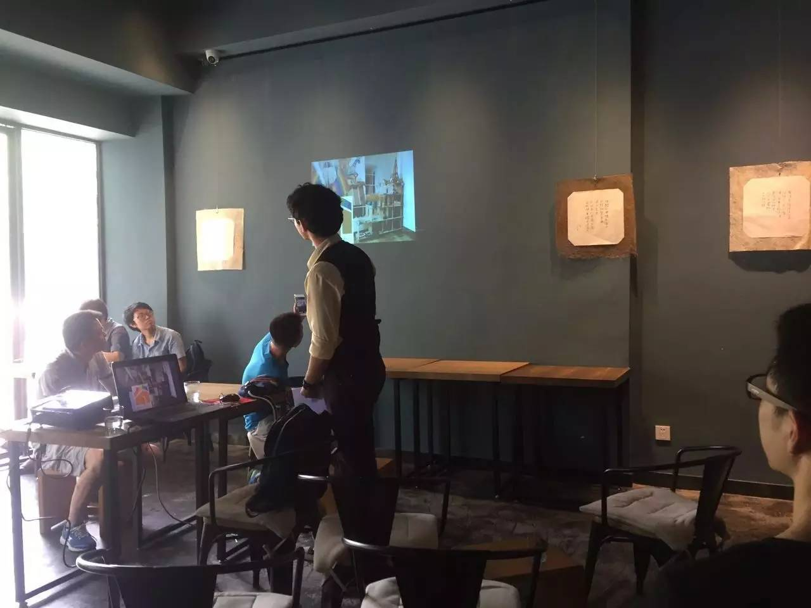
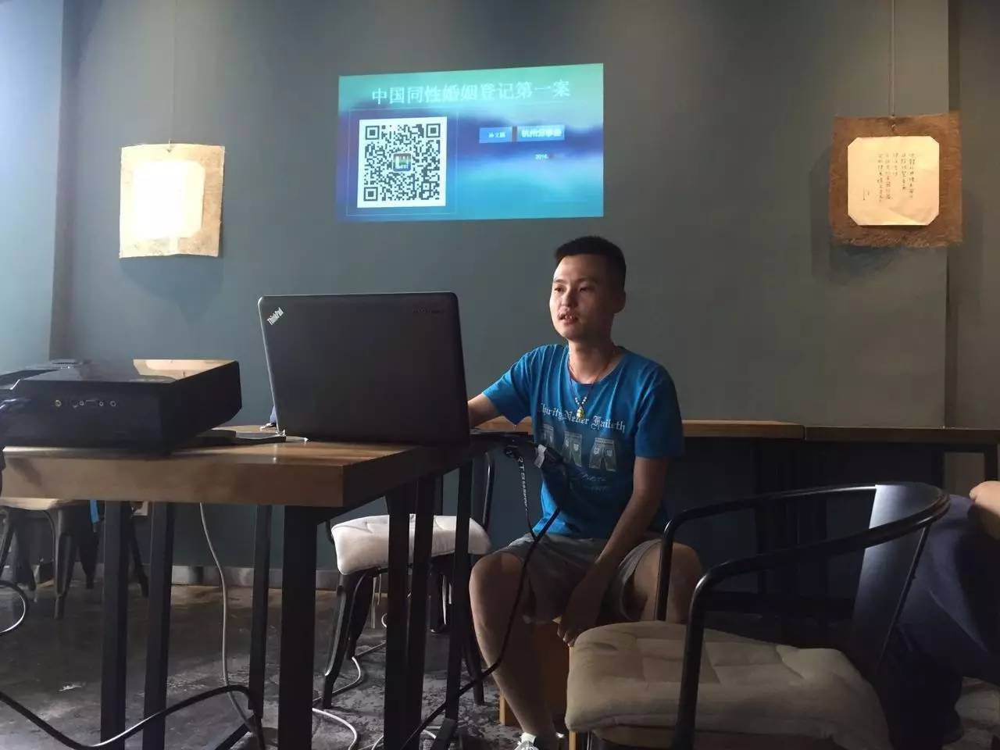
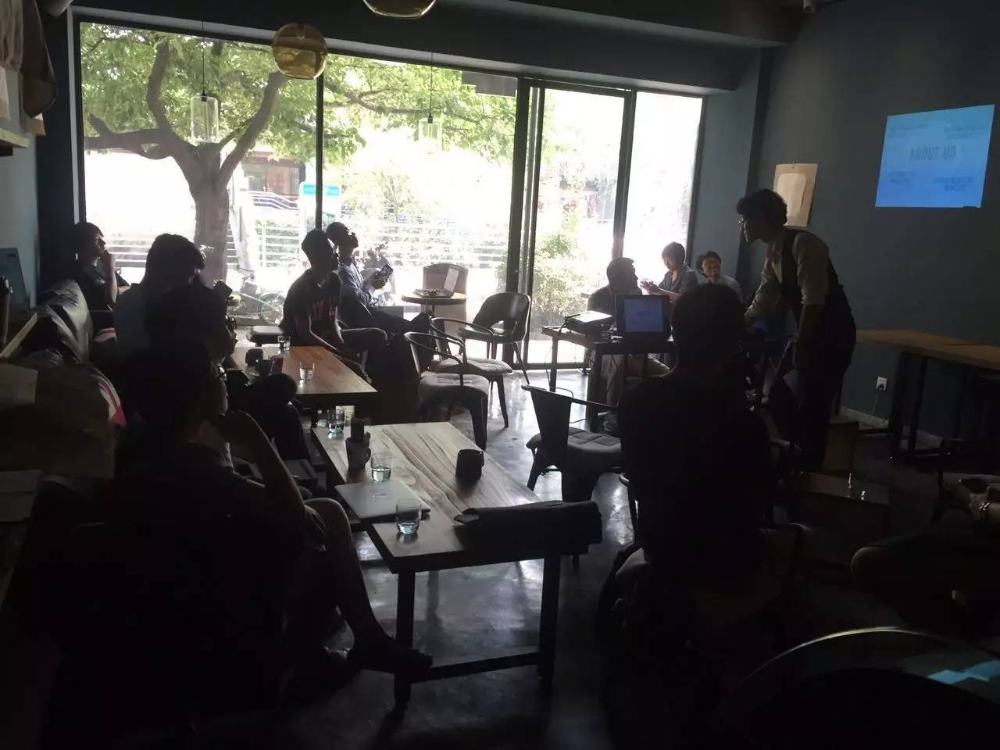
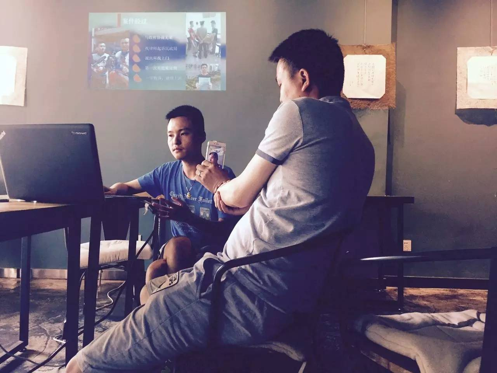

总结 | 同性婚姻第一案孙文麟分享会

中午有幸收到邀请，和这次的主角及组织者在分享会正式开始之前共进了午餐。在座的各位和孙文麟聊了很多，包括同志领养孩子、是否应该在公共空间禁烟等话题，可以感受到他是一个具有极强批判思维的人，对很多问题都有自己独特的看法。
2015年6月23日，在下午的分享会上，孙文麟首先为我们讲述了他和他的男友走进民政局要登记结婚，却遭到了拒绝。于是他们选择利用法律的武器来维护自己的权利。中间经历了被派出所找上门、开庭被延期，最后一审败诉。虽然目前结果并不尽如人意，但他们并没有就此放弃，而是继续上诉。他们举办了一场公开的同志婚礼，牵着手，面前崎岖的道路他们一起坚持走下去。同时他们想要为更多的同志举办婚礼，目前正在全国召集100对想要举办婚礼的同性情侣们。

然后是特别嘉宾马云律师，以一个律师的视角发表了他对这起中国同性婚姻登记第一案的看法。他说这样的结果是可以预见的，但是这样的做法也是很有必要的，可以让公众看到是有人有这样的需求的。

最后的提问环节，现场的和线上看直播的听众都和孙文麟进行了热烈的讨论。观众提出了各式各样的问题。有人问了孙文麟感情生活方面的问题，一涉及到这方面，他就显出了腼腆的样子（我们真的有一些好奇呀⁄(⁄ ⁄•⁄ω⁄•⁄ ⁄)⁄接着有一些关于倡导或发声活动的讨论，不管是刚开始活动时的迷茫，还是过程中的各种阻碍，对于孙文麟来说好像都不是什么问题，他优秀的心态确实令人敬佩。随着交流的深入，大家开始讨论一些关于做公益、争取权利等的议题，为这次的分享会划上了一个圆满的句号。

（Owen：在整个过程中我觉得最值得注意的是胡明亮的发声。正如他们所说，因为性格、不善言辞和“思想”（胡明亮语）的原因，整个事件里都是孙文麟来面对媒体和公众，我们很少听见胡明亮的声音。然而婚姻是伴侣共同的事，争取婚姻也是。当被问到孙文麟是否是因为遇到他而产生推动同性婚姻的想法，胡明亮讲述了他个人的故事：关于他在遇见孙文麟前不知道“出柜”为何物，如何“顺利”的跟家里人出柜，如何在去登记时让家人拿出户口本，如何跟家里人解释开庭等等……这也是整个事件里不可缺少的故事。）
最后十分感谢孙文麟和胡明亮先生愿意为想要结婚的同性伴侣们发声，也十分感谢马云律师能够站出来支持他们，同时也感谢提供场地的TheOopen。